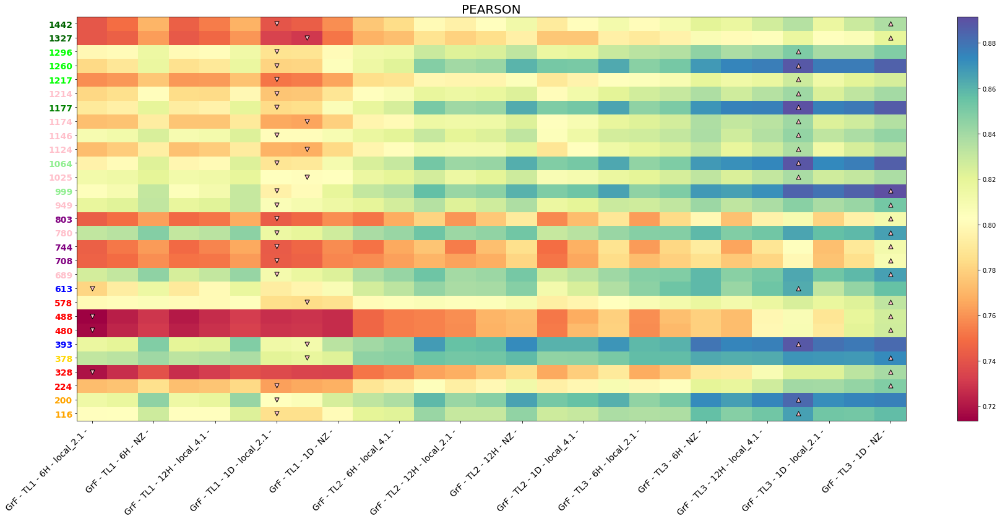
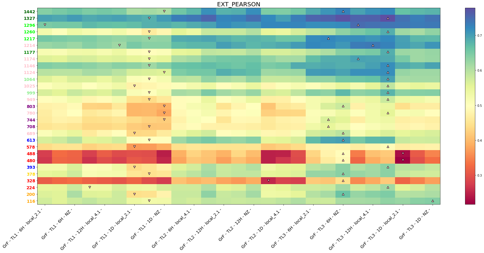
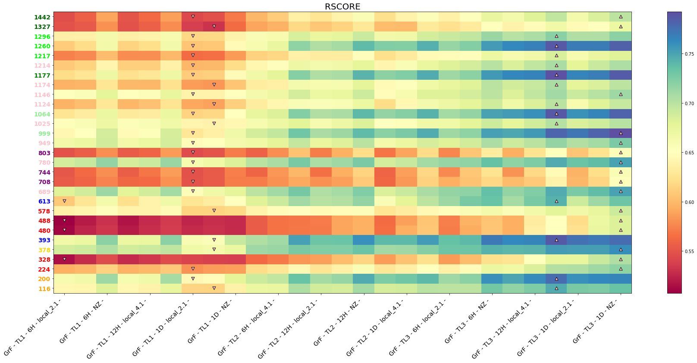
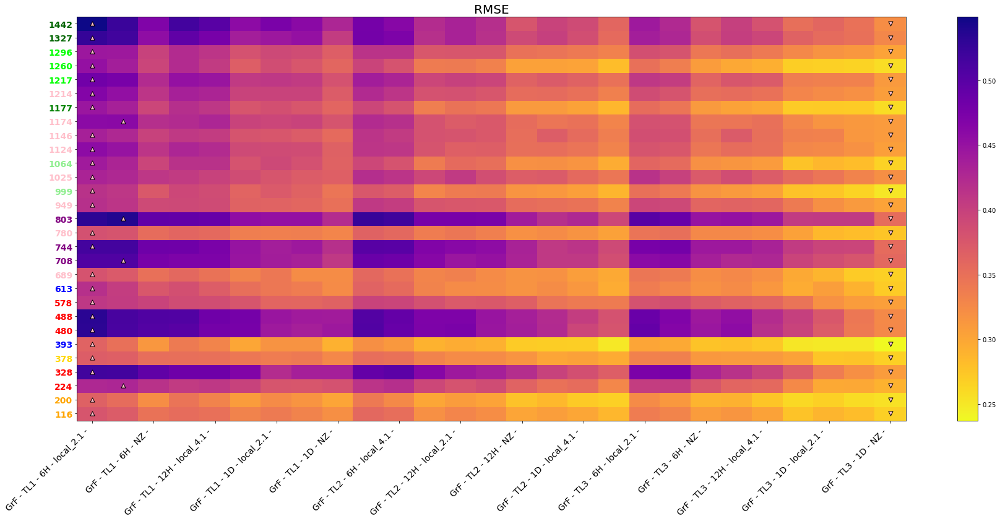
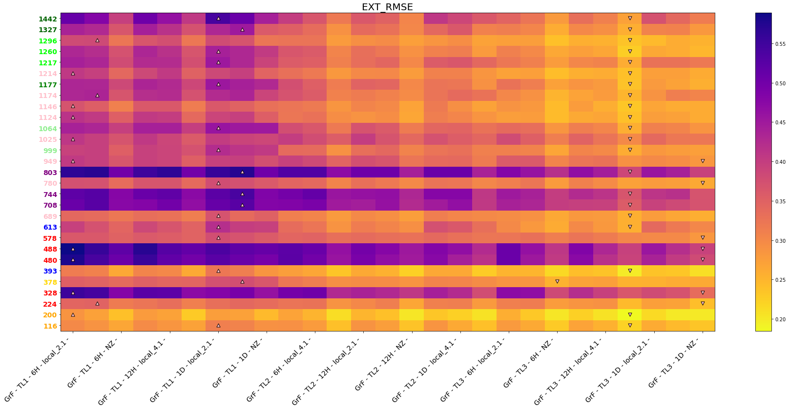
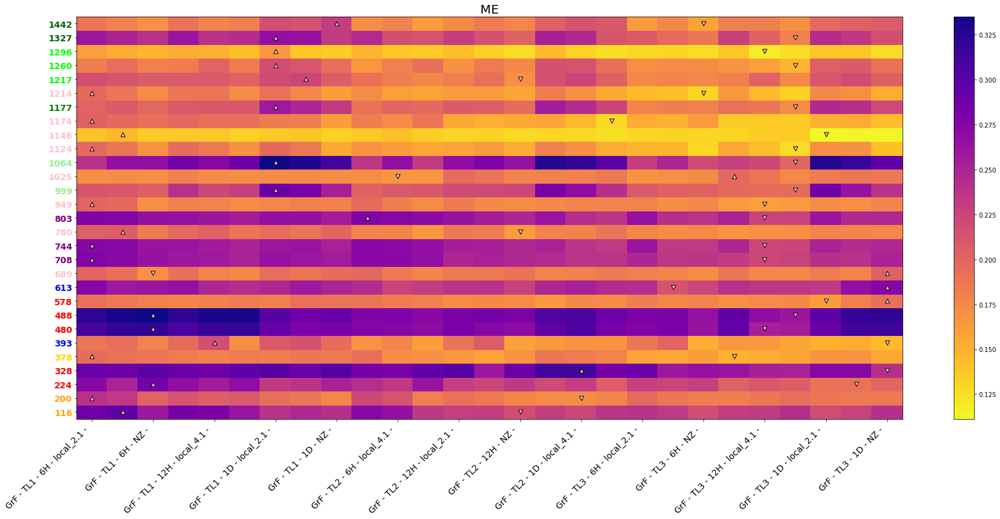

In this notebook we plot the results of the experiments for the following parameters:
linear model
wind fields as part of the predictors
no gradients as part of the predictors
PCA caculated using all rows and columns
The notebook was run with
Experiments config¶
In a attempt to make things clearer, here is a copy of the experiments config/code:
Plots¶
Here the results aIn a attempt to make things clearer, here is a copy of the experiments config/code:re plotted using a copy of the code that was in the repository
# basics
import os, sys
# arrays
import numpy as np
import xarray as xr
# application
import matplotlib.pyplot as plt
import cartopy.crs as ccrs
import panel as pn
pn.extension()
# to autocomplete code
%config Completer.use_jedi = False
# append sscode to path
#sys.path.insert(0, os.path.join(os.path.abspath(''), '..'))
sys.path.insert(0, '/home/metocean/geocean-nz-ss')
data_path = '/data' #'/data/storm_surge_data/'
os.environ["SSURGE_DATA_PATH"] = data_path
default_region=(140,190,-70,-20)
default_region_reduced = (160,185,-52,-30)
from sscode.config import default_region_reduced
from sscode.plotting.config import _figsize, _fontsize_title
from sscode.plotting.utils import plot_ccrs_nz
from sscode.data import load_moana_hindcast
# from bokeh.plotting import figure, show, output_notebook
# output_notebook()
%matplotlib inline
DATA PATH /data
linear_stats = xr.open_dataset('../../data/statistics/experiments/ahanoa1_winds_nogradients_experiment_linear_final_args.nc')
linear_stats
<xarray.Dataset>
Dimensions: (site: 29, grad: 1, winds: 1, tlapse: 3, tresample: 3, region: 3, tsize: 1, perpcs: 1)
Coordinates:
* site (site) int64 116 200 224 328 378 ... 1217 1260 1296 1327 1442
Dimensions without coordinates: grad, winds, tlapse, tresample, region, tsize, perpcs
Data variables: (12/16)
expl_var (site, grad, winds, tlapse, tresample, region, tsize, perpcs) float64 ...
mae (site, grad, winds, tlapse, tresample, region, tsize, perpcs) float64 ...
mse (site, grad, winds, tlapse, tresample, region, tsize, perpcs) float64 ...
me (site, grad, winds, tlapse, tresample, region, tsize, perpcs) float64 ...
medae (site, grad, winds, tlapse, tresample, region, tsize, perpcs) float64 ...
tweedie (site, grad, winds, tlapse, tresample, region, tsize, perpcs) float64 ...
... ...
bias (site, grad, winds, tlapse, tresample, region, tsize, perpcs) float64 ...
si (site, grad, winds, tlapse, tresample, region, tsize, perpcs) float64 ...
rmse (site, grad, winds, tlapse, tresample, region, tsize, perpcs) float64 ...
pearson (site, grad, winds, tlapse, tresample, region, tsize, perpcs) float64 ...
spearman (site, grad, winds, tlapse, tresample, region, tsize, perpcs) float64 ...
rscore (site, grad, winds, tlapse, tresample, region, tsize, perpcs) float64 ...xarray.Dataset
- site: 29
- grad: 1
- winds: 1
- tlapse: 3
- tresample: 3
- region: 3
- tsize: 1
- perpcs: 1
- site(site)int64116 200 224 328 ... 1296 1327 1442
array([ 116, 200, 224, 328, 378, 393, 480, 488, 578, 613, 689, 708, 744, 780, 803, 949, 999, 1025, 1064, 1124, 1146, 1174, 1177, 1214, 1217, 1260, 1296, 1327, 1442])
- expl_var(site, grad, winds, tlapse, tresample, region, tsize, perpcs)float64...
array([[[[[[[[0.643776]], ..., [[0.684467]]], ..., [[[0.61644 ]], ..., [[0.639143]]]], ..., [[[[0.698907]], ..., [[0.732511]]], ..., [[[0.727087]], ..., [[0.734186]]]]]]], ..., [[[[[[[0.545507]], ..., [[0.588833]]], ..., [[[0.542611]], ..., [[0.570633]]]], ..., [[[[0.637813]], ..., [[0.672712]]], ..., [[[0.664115]], ..., [[0.698829]]]]]]]]) - mae(site, grad, winds, tlapse, tresample, region, tsize, perpcs)float64...
array([[[[[[[[0.05286 ]], ..., [[0.049461]]], ..., [[[0.053778]], ..., [[0.051481]]]], ..., [[[[0.048393]], ..., [[0.045463]]], ..., [[[0.044716]], ..., [[0.044049]]]]]]], ..., [[[[[[[0.029184]], ..., [[0.027825]]], ..., [[[0.030019]], ..., [[0.02919 ]]]], ..., [[[[0.026199]], ..., [[0.025168]]], ..., [[[0.025632]], ..., [[0.02433 ]]]]]]]]) - mse(site, grad, winds, tlapse, tresample, region, tsize, perpcs)float64...
array([[[[[[[[0.004368]], ..., [[0.003893]]], ..., [[[0.004571]], ..., [[0.004318]]]], ..., [[[[0.003694]], ..., [[0.003307]]], ..., [[[0.003251]], ..., [[0.003174]]]]]]], ..., [[[[[[[0.001445]], ..., [[0.001307]]], ..., [[[0.001522]], ..., [[0.001429]]]], ..., [[[[0.001152]], ..., [[0.00104 ]]], ..., [[[0.001118]], ..., [[0.001003]]]]]]]]) - me(site, grad, winds, tlapse, tresample, region, tsize, perpcs)float64...
array([[[[[[[[0.287644]], ..., [[0.25917 ]]], ..., [[[0.239169]], ..., [[0.240639]]]], ..., [[[[0.239201]], ..., [[0.218307]]], ..., [[[0.219293]], ..., [[0.241867]]]]]]], ..., [[[[[[[0.188719]], ..., [[0.169869]]], ..., [[[0.216733]], ..., [[0.230764]]]], ..., [[[[0.163272]], ..., [[0.158924]]], ..., [[[0.197354]], ..., [[0.207964]]]]]]]]) - medae(site, grad, winds, tlapse, tresample, region, tsize, perpcs)float64...
array([[[[[[[[0.044814]], ..., [[0.041621]]], ..., [[[0.045178]], ..., [[0.041442]]]], ..., [[[[0.040529]], ..., [[0.037786]]], ..., [[[0.037219]], ..., [[0.036002]]]]]]], ..., [[[[[[[0.023307]], ..., [[0.022627]]], ..., [[[0.024374]], ..., [[0.02333 ]]]], ..., [[[[0.021104]], ..., [[0.020733]]], ..., [[[0.020613]], ..., [[0.019672]]]]]]]]) - tweedie(site, grad, winds, tlapse, tresample, region, tsize, perpcs)float64...
array([[[[[[[[0.004368]], ..., [[0.003893]]], ..., [[[0.004571]], ..., [[0.004318]]]], ..., [[[[0.003694]], ..., [[0.003307]]], ..., [[[0.003251]], ..., [[0.003174]]]]]]], ..., [[[[[[[0.001445]], ..., [[0.001307]]], ..., [[[0.001522]], ..., [[0.001429]]]], ..., [[[[0.001152]], ..., [[0.00104 ]]], ..., [[[0.001118]], ..., [[0.001003]]]]]]]]) - ext_mae(site, grad, winds, tlapse, tresample, region, tsize, perpcs)float64...
array([[[[[[[[0.072012]], ..., [[0.063277]]], ..., [[[0.080547]], ..., [[0.073811]]]], ..., [[[[0.066368]], ..., [[0.056738]]], ..., [[[0.068579]], ..., [[0.062119]]]]]]], ..., [[[[[[[0.05537 ]], ..., [[0.047493]]], ..., [[[0.060764]], ..., [[0.055544]]]], ..., [[[[0.045009]], ..., [[0.038009]]], ..., [[[0.047206]], ..., [[0.042509]]]]]]]]) - ext_mse(site, grad, winds, tlapse, tresample, region, tsize, perpcs)float64...
array([[[[[[[[0.00734 ]], ..., [[0.005777]]], ..., [[[0.008834]], ..., [[0.007777]]]], ..., [[[[0.00627 ]], ..., [[0.004737]]], ..., [[[0.006651]], ..., [[0.005574]]]]]]], ..., [[[[[[[0.004208]], ..., [[0.003301]]], ..., [[[0.005058]], ..., [[0.004352]]]], ..., [[[[0.002956]], ..., [[0.002167]]], ..., [[[0.003382]], ..., [[0.002754]]]]]]]]) - ext_rmse(site, grad, winds, tlapse, tresample, region, tsize, perpcs)float64...
array([[[[[[[[0.299927]], ..., [[0.26614 ]]], ..., [[[0.311427]], ..., [[0.290048]]]], ..., [[[[0.279711]], ..., [[0.230414]]], ..., [[[0.262103]], ..., [[0.23452 ]]]]]]], ..., [[[[[[[0.511017]], ..., [[0.397859]]], ..., [[[0.541671]], ..., [[0.440596]]]], ..., [[[[0.346081]], ..., [[0.280981]]], ..., [[[0.371314]], ..., [[0.314936]]]]]]]]) - ext_pearson(site, grad, winds, tlapse, tresample, region, tsize, perpcs)float64...
array([[[[[[[[0.574204]], ..., [[0.578661]]], ..., [[[0.537939]], ..., [[0.528931]]]], ..., [[[[0.57979 ]], ..., [[0.610523]]], ..., [[[0.622755]], ..., [[0.641141]]]]]]], ..., [[[[[[[0.639675]], ..., [[0.658178]]], ..., [[[0.610012]], ..., [[0.60895 ]]]], ..., [[[[0.689143]], ..., [[0.726575]]], ..., [[[0.665497]], ..., [[0.678483]]]]]]]]) - bias(site, grad, winds, tlapse, tresample, region, tsize, perpcs)float64...
array([[[[[[[[ 3.391581e-03]], ..., [[ 5.909519e-03]]], ..., [[[ 1.475175e-03]], ..., [[ 4.454766e-03]]]], ..., [[[[ 3.515710e-03]], ..., [[ 5.986598e-03]]], ..., [[[ 4.459309e-04]], ..., [[ 2.825984e-03]]]]]]], ..., [[[[[[[-4.451605e-04]], ..., [[ 8.608679e-05]]], ..., [[[-8.457175e-04]], ..., [[-4.911873e-04]]]], ..., [[[[-8.152674e-04]], ..., [[ 1.875115e-04]]], ..., [[[-9.802860e-04]], ..., [[-9.342188e-04]]]]]]]]) - si(site, grad, winds, tlapse, tresample, region, tsize, perpcs)float64...
array([[[[[[[[0.72572 ]], ..., [[0.650642]]], ..., [[[0.693718]], ..., [[0.642215]]]], ..., [[[[0.644591]], ..., [[0.581202]]], ..., [[[0.557247]], ..., [[0.529782]]]]]]], ..., [[[[[[[0.990827]], ..., [[0.899003]]], ..., [[[0.928491]], ..., [[0.872993]]]], ..., [[[[0.804697]], ..., [[0.721732]]], ..., [[[0.705188]], ..., [[0.644643]]]]]]]]) - rmse(site, grad, winds, tlapse, tresample, region, tsize, perpcs)float64...
array([[[[[[[[0.378375]], ..., [[0.347315]]], ..., [[[0.34064 ]], ..., [[0.320578]]]], ..., [[[[0.337974]], ..., [[0.307872]]], ..., [[[0.287653]], ..., [[0.266682]]]]]]], ..., [[[[[[[0.548987]], ..., [[0.468659]]], ..., [[[0.47426 ]], ..., [[0.428969]]]], ..., [[[[0.441883]], ..., [[0.379698]]], ..., [[[0.360024]], ..., [[0.321288]]]]]]]]) - pearson(site, grad, winds, tlapse, tresample, region, tsize, perpcs)float64...
array([[[[[[[[0.802432]], ..., [[0.827662]]], ..., [[[0.785178]], ..., [[0.799922]]]], ..., [[[[0.836031]], ..., [[0.856149]]], ..., [[[0.852709]], ..., [[0.857074]]]]]]], ..., [[[[[[[0.741337]], ..., [[0.769705]]], ..., [[[0.739986]], ..., [[0.758402]]]], ..., [[[[0.800506]], ..., [[0.820799]]], ..., [[[0.816184]], ..., [[0.836677]]]]]]]]) - spearman(site, grad, winds, tlapse, tresample, region, tsize, perpcs)float64...
array([[[[[[[[0.792671]], ..., [[0.820174]]], ..., [[[0.775459]], ..., [[0.792893]]]], ..., [[[[0.829671]], ..., [[0.849437]]], ..., [[[0.840161]], ..., [[0.845876]]]]]]], ..., [[[[[[[0.70228 ]], ..., [[0.726449]]], ..., [[[0.708459]], ..., [[0.721183]]]], ..., [[[[0.760416]], ..., [[0.781805]]], ..., [[[0.789257]], ..., [[0.808302]]]]]]]]) - rscore(site, grad, winds, tlapse, tresample, region, tsize, perpcs)float64...
array([[[[[[[[0.642835]], ..., [[0.681612]]], ..., [[[0.616258]], ..., [[0.637477]]]], ..., [[[[0.697897]], ..., [[0.729581]]], ..., [[[0.72707 ]], ..., [[0.733515]]]]]]], ..., [[[[[[[0.545444]], ..., [[0.588831]]], ..., [[[0.542396]], ..., [[0.57056 ]]]], ..., [[[[0.637604]], ..., [[0.672701]]], ..., [[[0.663826]], ..., [[0.698567]]]]]]]])
stats_plot = linear_stats # EDIT TO PLOT KNN
# generate labels for x-axis
variables_dictionary = {
'calculate_gradient': ['GrF'],#,'GrT'],
'winds': ['WT'],
'time_lapse': ['TL1','TL2','TL3'],
'time_resample': ['6H','12H','1D'],
'region': ['local_2.1', 'local_4.1', 'NZ'],
'train_size': ['70%'],
'percentage_pcs': ['98%'],
'k_neighbors': ['3','6','9']
}
x_labels = []
for cg in variables_dictionary['calculate_gradient']:
for ws in variables_dictionary['winds']:
for tl in variables_dictionary['time_lapse']:
for tr in variables_dictionary['time_resample']:
for r in variables_dictionary['region']:
for ts in variables_dictionary['train_size']:
for pp in variables_dictionary['percentage_pcs']:
# for kn in variables_dictionary['k_neighbors']:
x_labels.append(
cg+' - '+tl+' - '+tr+' - '+r+' - ' # +kn
)
# and now we load the longitudes and latitudes for the selected sites
locations = load_moana_hindcast(plot=False)[['lon','lat']].sel(site=linear_stats.site.values)
# select colors for each location depending on the shore
loading the Moana v2 hindcast data...
locations
<xarray.Dataset>
Dimensions: (site: 29)
Coordinates:
* site (site) int64 116 200 224 328 378 393 ... 1217 1260 1296 1327 1442
Data variables:
lon (site) float64 dask.array<chunksize=(1,), meta=np.ndarray>
lat (site) float64 dask.array<chunksize=(1,), meta=np.ndarray>xarray.Dataset
- site: 29
- site(site)int64116 200 224 328 ... 1296 1327 1442
array([ 116, 200, 224, 328, 378, 393, 480, 488, 578, 613, 689, 708, 744, 780, 803, 949, 999, 1025, 1064, 1124, 1146, 1174, 1177, 1214, 1217, 1260, 1296, 1327, 1442])
- lon(site)float64dask.array<chunksize=(1,), meta=np.ndarray>
- long_name :
- longitude
Array Chunk Bytes 232 B 8 B Shape (29,) (1,) Count 1478 Tasks 29 Chunks Type float64 numpy.ndarray - lat(site)float64dask.array<chunksize=(1,), meta=np.ndarray>
- long_name :
- latitude
Array Chunk Bytes 232 B 8 B Shape (29,) (1,) Count 1478 Tasks 29 Chunks Type float64 numpy.ndarray
# select colors for each location depending on the shore
locations_colors = [
'orange','orange','red','red','gold','blue','red','red','red','blue','pink',
'purple','purple','pink','purple','pink','lightgreen','pink','lightgreen','pink','pink','pink',
'green','pink','lime','lime','lime','darkgreen','darkgreen'
]
# plot all the locations with the colors
# %matplotlib to zoom in the map
fig, ax = plt.subplots(
figsize=(14,14),subplot_kw={
'projection':ccrs.PlateCarree(central_longitude=180)
}
)
xr.plot.scatter(
locations,x='lon',y='lat',ax=ax,transform=ccrs.PlateCarree(),
zorder=50,s=100,marker='*',c='red'
)
for isite,color in zip(range(len(locations.site)),locations_colors):
ax.text(
x=locations.lon.values[isite]+0.3,y=locations.lat.values[isite],
s=locations.site.values.astype(str)[isite],
transform=ccrs.PlateCarree(),size=14,zorder=40,
backgroundcolor=color
)
plot_ccrs_nz([ax],plot_labels=(True,5,5))
ax.set_facecolor('lightblue')
---------------------------------------------------------------------------
TimeoutError Traceback (most recent call last)
~/.conda/envs/seb_ss/lib/python3.8/urllib/request.py in do_open(self, http_class, req, **http_conn_args)
1353 try:
-> 1354 h.request(req.get_method(), req.selector, req.data, headers,
1355 encode_chunked=req.has_header('Transfer-encoding'))
~/.conda/envs/seb_ss/lib/python3.8/http/client.py in request(self, method, url, body, headers, encode_chunked)
1251 """Send a complete request to the server."""
-> 1252 self._send_request(method, url, body, headers, encode_chunked)
1253
~/.conda/envs/seb_ss/lib/python3.8/http/client.py in _send_request(self, method, url, body, headers, encode_chunked)
1297 body = _encode(body, 'body')
-> 1298 self.endheaders(body, encode_chunked=encode_chunked)
1299
~/.conda/envs/seb_ss/lib/python3.8/http/client.py in endheaders(self, message_body, encode_chunked)
1246 raise CannotSendHeader()
-> 1247 self._send_output(message_body, encode_chunked=encode_chunked)
1248
~/.conda/envs/seb_ss/lib/python3.8/http/client.py in _send_output(self, message_body, encode_chunked)
1006 del self._buffer[:]
-> 1007 self.send(msg)
1008
~/.conda/envs/seb_ss/lib/python3.8/http/client.py in send(self, data)
946 if self.auto_open:
--> 947 self.connect()
948 else:
~/.conda/envs/seb_ss/lib/python3.8/http/client.py in connect(self)
1413
-> 1414 super().connect()
1415
~/.conda/envs/seb_ss/lib/python3.8/http/client.py in connect(self)
917 """Connect to the host and port specified in __init__."""
--> 918 self.sock = self._create_connection(
919 (self.host,self.port), self.timeout, self.source_address)
~/.conda/envs/seb_ss/lib/python3.8/socket.py in create_connection(address, timeout, source_address)
807 try:
--> 808 raise err
809 finally:
~/.conda/envs/seb_ss/lib/python3.8/socket.py in create_connection(address, timeout, source_address)
795 sock.bind(source_address)
--> 796 sock.connect(sa)
797 # Break explicitly a reference cycle
TimeoutError: [Errno 110] Connection timed out
During handling of the above exception, another exception occurred:
URLError Traceback (most recent call last)
~/.conda/envs/seb_ss/lib/python3.8/site-packages/IPython/core/formatters.py in __call__(self, obj)
339 pass
340 else:
--> 341 return printer(obj)
342 # Finally look for special method names
343 method = get_real_method(obj, self.print_method)
~/.conda/envs/seb_ss/lib/python3.8/site-packages/IPython/core/pylabtools.py in <lambda>(fig)
248
249 if 'png' in formats:
--> 250 png_formatter.for_type(Figure, lambda fig: print_figure(fig, 'png', **kwargs))
251 if 'retina' in formats or 'png2x' in formats:
252 png_formatter.for_type(Figure, lambda fig: retina_figure(fig, **kwargs))
~/.conda/envs/seb_ss/lib/python3.8/site-packages/IPython/core/pylabtools.py in print_figure(fig, fmt, bbox_inches, **kwargs)
132 FigureCanvasBase(fig)
133
--> 134 fig.canvas.print_figure(bytes_io, **kw)
135 data = bytes_io.getvalue()
136 if fmt == 'svg':
~/.conda/envs/seb_ss/lib/python3.8/site-packages/matplotlib/backend_bases.py in print_figure(self, filename, dpi, facecolor, edgecolor, orientation, format, bbox_inches, pad_inches, bbox_extra_artists, backend, **kwargs)
2228 else suppress())
2229 with ctx:
-> 2230 self.figure.draw(renderer)
2231
2232 if bbox_inches:
~/.conda/envs/seb_ss/lib/python3.8/site-packages/matplotlib/artist.py in draw_wrapper(artist, renderer, *args, **kwargs)
72 @wraps(draw)
73 def draw_wrapper(artist, renderer, *args, **kwargs):
---> 74 result = draw(artist, renderer, *args, **kwargs)
75 if renderer._rasterizing:
76 renderer.stop_rasterizing()
~/.conda/envs/seb_ss/lib/python3.8/site-packages/matplotlib/artist.py in draw_wrapper(artist, renderer, *args, **kwargs)
49 renderer.start_filter()
50
---> 51 return draw(artist, renderer, *args, **kwargs)
52 finally:
53 if artist.get_agg_filter() is not None:
~/.conda/envs/seb_ss/lib/python3.8/site-packages/matplotlib/figure.py in draw(self, renderer)
2788
2789 self.patch.draw(renderer)
-> 2790 mimage._draw_list_compositing_images(
2791 renderer, self, artists, self.suppressComposite)
2792
~/.conda/envs/seb_ss/lib/python3.8/site-packages/matplotlib/image.py in _draw_list_compositing_images(renderer, parent, artists, suppress_composite)
130 if not_composite or not has_images:
131 for a in artists:
--> 132 a.draw(renderer)
133 else:
134 # Composite any adjacent images together
~/.conda/envs/seb_ss/lib/python3.8/site-packages/matplotlib/artist.py in draw_wrapper(artist, renderer, *args, **kwargs)
49 renderer.start_filter()
50
---> 51 return draw(artist, renderer, *args, **kwargs)
52 finally:
53 if artist.get_agg_filter() is not None:
~/.conda/envs/seb_ss/lib/python3.8/site-packages/cartopy/mpl/geoaxes.py in draw(self, renderer, **kwargs)
515 self._done_img_factory = True
516
--> 517 return matplotlib.axes.Axes.draw(self, renderer=renderer, **kwargs)
518
519 def _update_title_position(self, renderer):
~/.conda/envs/seb_ss/lib/python3.8/site-packages/matplotlib/artist.py in draw_wrapper(artist, renderer, *args, **kwargs)
49 renderer.start_filter()
50
---> 51 return draw(artist, renderer, *args, **kwargs)
52 finally:
53 if artist.get_agg_filter() is not None:
~/.conda/envs/seb_ss/lib/python3.8/site-packages/matplotlib/_api/deprecation.py in wrapper(*inner_args, **inner_kwargs)
429 else deprecation_addendum,
430 **kwargs)
--> 431 return func(*inner_args, **inner_kwargs)
432
433 return wrapper
~/.conda/envs/seb_ss/lib/python3.8/site-packages/matplotlib/axes/_base.py in draw(self, renderer, inframe)
2919 renderer.stop_rasterizing()
2920
-> 2921 mimage._draw_list_compositing_images(renderer, self, artists)
2922
2923 renderer.close_group('axes')
~/.conda/envs/seb_ss/lib/python3.8/site-packages/matplotlib/image.py in _draw_list_compositing_images(renderer, parent, artists, suppress_composite)
130 if not_composite or not has_images:
131 for a in artists:
--> 132 a.draw(renderer)
133 else:
134 # Composite any adjacent images together
~/.conda/envs/seb_ss/lib/python3.8/site-packages/matplotlib/artist.py in draw_wrapper(artist, renderer, *args, **kwargs)
49 renderer.start_filter()
50
---> 51 return draw(artist, renderer, *args, **kwargs)
52 finally:
53 if artist.get_agg_filter() is not None:
~/.conda/envs/seb_ss/lib/python3.8/site-packages/cartopy/mpl/feature_artist.py in draw(self, renderer, *args, **kwargs)
151 except ValueError:
152 warnings.warn('Unable to determine extent. Defaulting to global.')
--> 153 geoms = self._feature.intersecting_geometries(extent)
154
155 # Combine all the keyword args in priority order.
~/.conda/envs/seb_ss/lib/python3.8/site-packages/cartopy/feature/__init__.py in intersecting_geometries(self, extent)
295 """
296 self.scaler.scale_from_extent(extent)
--> 297 return super().intersecting_geometries(extent)
298
299 def with_scale(self, new_scale):
~/.conda/envs/seb_ss/lib/python3.8/site-packages/cartopy/feature/__init__.py in intersecting_geometries(self, extent)
104 extent_geom = sgeom.box(extent[0], extent[2],
105 extent[1], extent[3])
--> 106 return (geom for geom in self.geometries() if
107 geom is not None and extent_geom.intersects(geom))
108 else:
~/.conda/envs/seb_ss/lib/python3.8/site-packages/cartopy/feature/__init__.py in geometries(self)
277 key = (self.name, self.category, self.scale)
278 if key not in _NATURAL_EARTH_GEOM_CACHE:
--> 279 path = shapereader.natural_earth(resolution=self.scale,
280 category=self.category,
281 name=self.name)
~/.conda/envs/seb_ss/lib/python3.8/site-packages/cartopy/io/shapereader.py in natural_earth(resolution, category, name)
280 format_dict = {'config': config, 'category': category,
281 'name': name, 'resolution': resolution}
--> 282 return ne_downloader.path(format_dict)
283
284
~/.conda/envs/seb_ss/lib/python3.8/site-packages/cartopy/io/__init__.py in path(self, format_dict)
201 else:
202 # we need to download the file
--> 203 result_path = self.acquire_resource(target_path, format_dict)
204
205 return result_path
~/.conda/envs/seb_ss/lib/python3.8/site-packages/cartopy/io/shapereader.py in acquire_resource(self, target_path, format_dict)
335 url = self.url(format_dict)
336
--> 337 shapefile_online = self._urlopen(url)
338
339 zfh = ZipFile(io.BytesIO(shapefile_online.read()), 'r')
~/.conda/envs/seb_ss/lib/python3.8/site-packages/cartopy/io/__init__.py in _urlopen(self, url)
240 """
241 warnings.warn('Downloading: {}'.format(url), DownloadWarning)
--> 242 return urlopen(url)
243
244 @staticmethod
~/.conda/envs/seb_ss/lib/python3.8/urllib/request.py in urlopen(url, data, timeout, cafile, capath, cadefault, context)
220 else:
221 opener = _opener
--> 222 return opener.open(url, data, timeout)
223
224 def install_opener(opener):
~/.conda/envs/seb_ss/lib/python3.8/urllib/request.py in open(self, fullurl, data, timeout)
523
524 sys.audit('urllib.Request', req.full_url, req.data, req.headers, req.get_method())
--> 525 response = self._open(req, data)
526
527 # post-process response
~/.conda/envs/seb_ss/lib/python3.8/urllib/request.py in _open(self, req, data)
540
541 protocol = req.type
--> 542 result = self._call_chain(self.handle_open, protocol, protocol +
543 '_open', req)
544 if result:
~/.conda/envs/seb_ss/lib/python3.8/urllib/request.py in _call_chain(self, chain, kind, meth_name, *args)
500 for handler in handlers:
501 func = getattr(handler, meth_name)
--> 502 result = func(*args)
503 if result is not None:
504 return result
~/.conda/envs/seb_ss/lib/python3.8/urllib/request.py in https_open(self, req)
1395
1396 def https_open(self, req):
-> 1397 return self.do_open(http.client.HTTPSConnection, req,
1398 context=self._context, check_hostname=self._check_hostname)
1399
~/.conda/envs/seb_ss/lib/python3.8/urllib/request.py in do_open(self, http_class, req, **http_conn_args)
1355 encode_chunked=req.has_header('Transfer-encoding'))
1356 except OSError as err: # timeout error
-> 1357 raise URLError(err)
1358 r = h.getresponse()
1359 except:
URLError: <urlopen error [Errno 110] Connection timed out>
<Figure size 1008x1008 with 1 Axes>
metrics_cmaps = { # ascendig = True
'expl_var': 'Spectral', 'me': 'plasma_r', 'mae': 'hot', 'mse': 'hot', 'ext_rmse': 'plasma_r',
'medae': 'hot', 'tweedie': 'jet', 'bias': 'pink_r', 'si': 'Spectral_r',
'rmse': 'plasma_r', 'pearson': 'Spectral', 'spearman': 'jet', 'rscore': 'Spectral',
'ext_pearson': 'Spectral'
}
# extract best sites order
num_sites = len(stats_plot.site)
sites_order = np.argsort(
np.mean(stats_plot['pearson'].values.reshape(num_sites,-1),axis=1)
) # this is not used
for metric_to_plot in ['pearson','ext_pearson','rscore','rmse','ext_rmse','me','mse']:
fig, ax = plt.subplots(figsize=(30,12))
# extract metric values from xarray.Dataset
metric_values = stats_plot[metric_to_plot].values.reshape(num_sites,-1)[:,:] \
if metric_to_plot!='bias' else np.abs(
stats_plot[metric_to_plot].values.reshape(num_sites,-1)[:,:]
)
# plot pcolors
pc = ax.pcolor(
metric_values, cmap=metrics_cmaps[metric_to_plot],
vmin=np.nanmin(metric_values),vmax=np.nanmax(metric_values)
)
ax.scatter(
np.argsort(metric_values)[:,0].reshape(-1) + 0.5, # last values in array
np.repeat(np.arange(num_sites),1) + 0.5, # y_positons
marker='v',facecolors='pink',edgecolors='black',linewidth=1,s=50,
zorder=10
)
ax.scatter(
np.argsort(metric_values)[:,-1].reshape(-1) + 0.5, # last values in array
np.repeat(np.arange(num_sites),1) + 0.5, # y_positons
marker='^',facecolors='pink',edgecolors='black',linewidth=1,s=50,
zorder=10
)
# plot vertical lines to help eye
# ax.axvline(x=62.5,linewidth=2,linestyle='--',c='grey')
# ax.axvline(x=71.5,linewidth=2,linestyle='--',c='grey')
fig.colorbar(pc,ax=ax)
ax.set_yticks(np.arange(num_sites)+0.5) # these are the positions, and below the labels = sites
ax.set_yticklabels(stats_plot.site.values[:],fontweight='bold',fontsize=14)
for ytick,color in zip(ax.get_yticklabels(),locations_colors):
ytick.set_color(color)
ax.set_xticks(np.arange(0,metric_values.shape[1],2)+0.5)
ax.set_xticklabels(x_labels[::2],fontsize=14)
plt.setp(ax.get_xticklabels(),rotation=45,ha='right')
ax.set_title(metric_to_plot.upper(),fontsize=20)





